CURATED STREAMS, VIDEOS, AND ARTICLES TO IMPROVE YOUR GAME
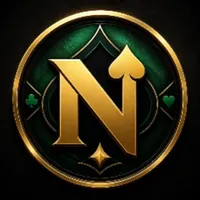
High-level poker action and analysis. A great stream to learn from while enjoying an interactive community.
WATCH STREAMDedicated cashgame grinder primarily focusing on standard No Limit Hold'em gameplay.
WATCH STREAMSolid cashgame grinder showing the ropes in typical No Limit Hold'em formats.
WATCH STREAM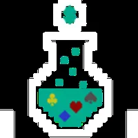
Versatile cashgame grinder sharing high-level play in both PLO and No Limit Hold'em.
WATCH STREAM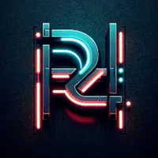
Experienced cashgame grinder streaming regular online sessions and thought processes.
WATCH STREAMEntertaining mixed-format streams featuring both tournament (MTT) and cash game grinding.
WATCH STREAM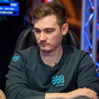
Consistent and educational online cash game streams with great live commentary.
WATCH STREAM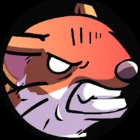
Focused online cash game sessions demonstrating solid fundamentals and exploit strategies.
WATCH STREAMFollow the daily grind of an online poker regular navigating the cash game tables.
WATCH STREAMFun, strategic, and interactive cash game streams with a highly engaged community.
WATCH STREAM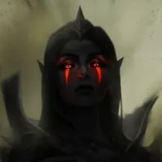
Dedicated poker grinder focusing on high-volume cash games and engaging community interaction.
WATCH STREAMSolid online poker streams featuring analytical gameplay, session reviews, and regular grinds.
WATCH STREAMHighly entertaining high-stakes cash game sessions. Watch massive pots and top-tier decision making.
WATCH STREAMEngaging poker streams covering various stakes with an emphasis on continuous improvement and fun.
WATCH STREAMPokerStars Ambassador known for highly entertaining MTT grinds, deep runs, and great community vibes.
WATCH STREAMInsightful content from a full-time NL50 grinder, perfect for small to mid-stakes players.
VISIT CHANNEL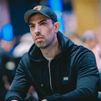
The go-to resource for Pot Limit Omaha (PLO) grinding, strategy, and solver analysis.
VISIT CHANNELHighly entertaining and educational tournament grinding from a PokerStars Pro.
VISIT CHANNEL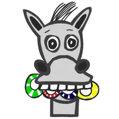
Excellent cash game grinder providing strategies for both online and live poker environments.
VISIT CHANNELElite-level tournament (MTT) strategy, ranges, and mindset coaching from Bencb.
VISIT CHANNEL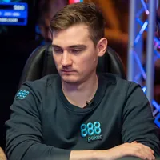
High-quality YouTube content complementing the Twitch grind with hand reviews and cash strategy.
VISIT CHANNEL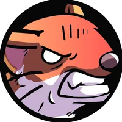
In-depth hand analysis, session reviews, and educational content for cash game players.
VISIT CHANNELDocumenting the grind through the ranks with practical cash game strategy and tips.
VISIT CHANNEL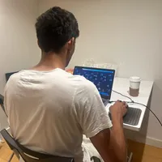
Valuable cash game insights, theoretical discussions, and focused gameplay reviews.
VISIT CHANNELHigh-level cash game theory and coaching aimed at moving players through the stakes.
VISIT CHANNELThe ultimate guide to crushing the micro stakes with highly exploitative beginner strategies.
VISIT CHANNEL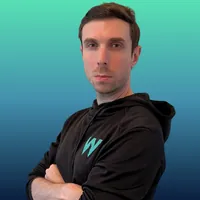
Stream highlights, big pots, and entertaining strategy breakdowns from the cash game tables.
VISIT CHANNEL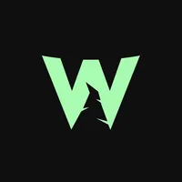
Deep dives into Game Theory Optimal (GTO) play, solver mechanics, and advanced math.
VISIT CHANNEL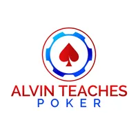
Excellent channel for breaking down complex solver concepts into practical exploit strategies.
VISIT CHANNEL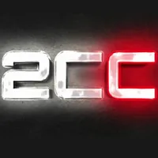
Focuses heavily on the mental game, building confidence, and maintaining a strong poker mindset.
VISIT CHANNELComprehensive strategy breakdowns, preflop charts, and high-level theory across formats.
VISIT CHANNELThe cash game dedicated branch of Raise Your Edge, focusing on deep stack dynamics.
VISIT CHANNELElite high-stakes strategy focusing on the balance between GTO and max exploitative play.
VISIT CHANNEL